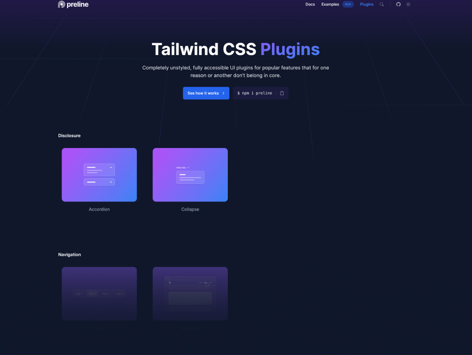
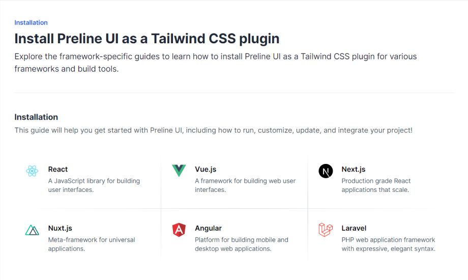

Changelog
See what's new added, changed, fixed, improved or updated.
New features and improvements
This update addresses some minor issues and improvements.
- Templates: Creative Agency Demo renamed to Coffee Shop Demo and updated
- Examples: Hero Sections
- Examples: Testimonials
- Examples: E-commerce Product Listings: Grid Layout
- Docs: General improvements and fixes.
- Docs: Add React + Vite guide.
- Docs: Add Adonis guide.
- Docs: Add Hugo guide.
-
Improvements:
The
beforeFinishevent andgoToFinishmethod have been added to the stepper plugin. [PR #600] -
Improvements:
The
updateevent now returns the current slide index. [PR #617] -
Fixed:
Add "non-linear"
modeto the stepper plugin. [Issue #529] -
Fixed:
Added ability to setup few fields for the
data-hs-combo-box-output-item-field. [Issue #548] -
Fixed:
Local search in the original input is now disabled when
apiUrlis configured andhasSearchistrue. [Issue #564] -
Fixed:
The
apiLoadMorefeature has been Added to enable loading additional items dynamically as the user scrolls. [Issue #565] -
Fixed:
The "title" field in
apiFieldsMapnow works correctly when usingtagsmode. [Issue #567] - Fixed: Resolve issues with loop behavior on mobile devices. [Issue #602]
-
Fixed:
The
destroymethod has been added to destroy the datepicker instance. [Issue #604] -
Fixed:
The
apiSelectedValuesproperty has been added for specifying predefined selected values. [Issue #610] -
Fixed:
The
optionAllowEmptyOptionproperty has been added to enable support for empty options in dropdown menus. With this property set, users can select an empty value (typically represented as a blank or "None" entry) in the dropdown, which is useful for scenarios where a selection is optional or needs to be cleared. [Issue #614] -
Fixed:
Add new
preventClientFilteringoption for control client-side filtering. [Issue #615] -
Fixed:
The
getInstancemethod for dropdowns now correctly returns the instance even when the second parameter is omitted. [Issue #619] - Fixed: Placement values for dropdowns have been corrected. [Issue #620]
- Fixed: Typo. "show" has been replaced with "open". [Issue #624]
- Fixed: Consolidated theme observation into a single observer. [Issue #627]
- Fixed: Issues with dropdown positioning if the height changes dynamically. [Issue #631]
-
Fixed:
Made
clipboardHelperan exported function for external use. [Issue #632] -
Fixed:
Prevent opening when disabled and
extraMarkupis clicked. [Issue #635] -
Fixed:
Enable the "add" button if the number of items is less than the
limit. [Issue #639] - Fixed: Automatically reposition tooltip when there's insufficient space. [Issue #643]
Minor improvements and fixes
This update addresses some minor issues and improvements.
- Docs Framework docs updates for Next.js, Vue, Nuxt.js, Angular and Laravel.
- Fixed: Dropdown positioning issues in some Examples. [Issue #578]
- Fixed: Optimized bundle size by removing unused dependencies and adding dependency validation checks. [PR #586 related fixes]

Tailwind v4, new Components, Plugins and more
Meet Preline UI v3.0.0 - this release features:
- Tawildin update to v4.0
- New plugins
- New components
- Mobile experience improvements
- and many more..
Breaking changes
Please note that there are some breaking changes to bear in mind when moving from v2.7.0 to v3.0.0. For more detailed information, check out the official Tailwind CSS Upgrade guide
- Plugins: Advanced Datepicker
- Plugins: Scroll Nav
- Components: TimePicker
- Components: Advanced Datepicker
- Components: Mega Menu Tabs as inner menu
- Components: Mega Menu Mega Menu to Overlay on Mobile Resoultion
- Components: Navs Scroll nav
- Components: Tabs Centered
- Components: Complete rewrite of the Switch
- Components: Input size improvements on mobile across whole project
- Feature: Tabs added support for opening (switching) tabs on hover
-
Feature:
Overlay added dynamic
z-indexfeature for handling overlays stacked in a random order.
- Fixed: Charts broken colors in dark mode
- Fixed: Overlay closing issues when several overlays are open.
- Fixed: Context menu added support for opening via "long-touch" on mobile devices.
- Fixed: Improved JSX code copying for self-closing tags and comment blocks.
- Fix: Select closed when a space was entered in the search field. [Issue #528] and [Issue #574]
-
Updated:
Tailwind CSS to
v4.0.8 -
Updated:
Apexcharts to
v4.4.0 - Migrate: Popper.js has been replaced with Floating UI across all plugins.

New Components, JSX Copy Code feature and more
This update brings new Sidebar, Maps & other components, JSX Copy Code feature, improvements and bug fixes from Github reports.
- Components: Sidebar
- Components: Maps Bubbles
- Components: Advanced select Minimum search length
- Components: Combobox Minimum search length
- Components: Overlay. It is now possible to call overlay methods directly on the overlay itself, without the need to associate the overlay with any button. At the same time, the old functionality has been retained to ensure backward compatibility.
- Components: Remove Element. Added "getInstance" method.
- Feature: Added the ability to copy HTML as JSX.
-
Feature:
New parameter
optionAllowEmptyOptionhas been added for the Advanced Select. [Issue #530] and [PR #532] -
Feature:
New parameter
minSearchLengthhas been added for the Advanced Select and Combobox. [Issue #496] -
Feature:
Added support for multiple
prevandnextelements with separate event listeners for each, ensuring proper initialization and cleanup in the destroy method. Improved event listener management forsearchandpaginationcontrols to prevent memory leaks and support dynamic elements. [Issue #494] - Fix: Issue with the "reset" functionality under certain conditions. [PR #520]
- Fix: Issue encountered while setting the value in "tags" mode. [PR #533]
- Fix: Improvements to static methods to achieve more consistent behavior. [Issue #492]

New Layout Splitter, Context Menu & 3 more plugin integrations and more
This update includes 5 new plugin integrations with component examples, Github improvements and bug fixes.
- Plugins: Textarea Autoheight
- Plugins: Layout Splitter
- Plugins: Toast Notifications
- Plugins: Confetti Animation
- Plugins: Leaflet Maps
- Components: Dropdown Context Menu
- Plugins: Added destroy method for all plugins for better lifecycle management.
- Examples: Leaflet Bubbles
- Examples: Advanced Select
- Examples: Blog Sections
- Fixed: Remove extra "typeof". [Issue #476] and [PR #471]
- Fixed: The mega menu behaves incorrectly on narrow screens. [Issue #474]
- Fixed: Trigger change on remove tag. [Issue #400]
- Fixed: Improve stepper reset handler. [PR #381]
-
Fixed:
Add
IAddVariantOptionstype to the carousel "dragging" class. [PR #473] - Fixed: Advanced Select is not submitted in the form data. [Issue #400]
- Fixed: Click on data-remove not firing any event on Advanced Select. [Issue #420]
- Fixed: Values in ComboBox does not update when selection made. [Issue #467]
- Fixed: The mega menu behaves incorrectly on narrow screens. [Issue #474]
- Fixed: plugin.ts file missing type definition. [Issue #478]
-
Fixed:
When submitting Advanced Select with
apiUrlthe title is submitted instead of the value. [Issue #481] - Fixed: SVG icons do not show up in the selected item. [Issue #514]
- Fixed: Problem with collapsing dropdown inside sidebar in mobile resolution. [Issue #504]
-
Improved:
A description that the
data-titleattribute is mandatory has been added. [Issue #444] -
Improved:
destroymethods have been added for most plugins. [Issue #443] and [Issue #510] -
Improved:
autoInitmethods have been improved. [Issue #463] and [Issue #429] - Improved: HSSelect toggle title and icon properties set. [PR #453]
- Improved: API was replaced by another. [Issue #464]
-
Improved:
Added new
backdropParentparameter to control which element the backdrop will be generated in. [Issue #475] -
Improved:
Added new parameter
dropdownVerticalFixedPlacementto force control over the position of the dropdown list. [Issue #489]
Critical bugs have been fixed.
- Fixed: Remove extra "typeof". [Issue #476] and [PR #471]
- Fixed: The mega menu behaves incorrectly on narrow screens. [Issue #474]
- Fixed: Trigger change on remove tag. [Issue #400]
- Fixed: Improve stepper reset handler. [PR #381]
-
Fixed:
Add
IAddVariantOptionstype to the carousel "dragging" class. [PR #473]

New Advanced Range Slider, Drag-and-Drop & Tree View plugins and more
This update brings a new Advanced Range Slider and Tree View plugins, Carousel and Advanced Select extensions, Improvements and Bug Fixes.
- Plugins: Tree View
- Plugins: Advanced Range Slider
- Third-Party Plugins: Advanced Range Slider
- Third-Party Plugins: Drag and Drop (Sortable.js)
- Tree View:
- Carousel:
- Advanced Select:
- Checkbox: Validation states
- Radio: Validation states
-
Added:
tagsInputIdandsearchIdThese parameters were added to theSelectplugin for accessibility purposes, so that you can add labels that reference relevant elements outside of the initialized element. -
Added:
Ability to generate select from remote data. Use
apiUrland other options that you can find in Docs. - Added: New options for more flexible carousel customization. You can find the new options in Docs.
-
Added:
plugin.ts, the typed version ofplugin.js. -
Added:
mjsversions of plugins. -
Added:
global.d.tsfor more convenient work with types. -
Added:
TypeScript
.tsfiles for ApexCharts and Clipboard helper scripts -
Deleted:
search-by-json.jsThis functionality has been completely or partially replaced by theComboBoxplugin. - Improved: For ease of use, we've reorganized the sections on the plugin pages.
- Fixed: 'HSStaticMethods' does not exist on type 'Window & typeof globalThis'. [Issue #401]
- Fixed: Advanced Select removeOption doesn't work after update. [Issue #417]
- Fixed: Property 'dropzone' is private and only accessible within class 'HSFileUpload'. [Issue #448]
Fixed Transition issue in Chrome
- Fixed: Transition issue which occurred in Chrome 127.0.6533.73 release. Thanks to @oliverhaas for the detailed [issu 414] report.

New Personal Template, Datatables and File-Upload plugins and more
This update brings a new Personal Templates, Datatables & File-Upload plugins, Examples, Improvements and Bug Fixes.
- Templates: Personal
- Examples: Blog Sections
- Examples: Card Sections
- Examples: Galleries
- Examples: User Profiles
- Examples: Description Lists
- Examples: Timeline
- Examples: Testimonials
- Examples: Textarea Input
- Examples: Navbars (Headers)
- Examples: Subscribe
- Examples: Footers
- Examples: Application Layouts
- Examples: Charts
- Examples: Navbars (Headers)
- Plugins: Datatables
- Plugins: File Upload
- Component Plugin: Datatables
- Component Plugin: File Upload
- Buttons: Active
- Dropdown: Scale animation option
- Modal Overlays: Scale animation option
- Advanced Select: Multiple with option template
- Advanced Select: Multiple with conditional counter
- Advanced Select: Multiple with counter and option template
- Advanced Select: Add/Remove Options (multiple)
- Advanced Select: Set single value using setter
- Advanced Select: Set multiple values using setter
- Advanced Select: Multiple with counter
- Combobox: Close Button
- Checkbox: Indeterminate
- Progress: Gauge
-
Improved:
Input Number
type="text"changed totype="number" - Improved: Circular progress with optimized code, better look and more detailed information.
-
Improved:
Addresses the accessibility reports [Issue #365], [Issue #373] and the improvements extended for
role="",aria-expanded="",aria-selected="",tabindex="", andaria-orientation=""on the following components: - Improved:
- Improved: Carousel plugin incorrect behavior in RTL dir [Issue #371], [Pull Request #372]
- Improved: Add selected option to multiple select [Issue #320]
- Fixed: Input Number: Validation/rejection bug, or at least inconsistent. [Issue #404]
- Fixed: Advanced Select multiple not storing multiple selected values correctly [Issue #390]
- Fixed: Advanced select's documentation copies invalid JSON when used without dark classes [Issue #378]
- Fixed: Combobox will skip at least one item if arrowdown/up in vue3 [Issue #369]
- Fixed: Searchable advanced select throws error when searching for value not in list [Issue #363]
- Fixed: Advanced Select not working in Nuxt.js (Vue.js) [Issue #325]
- Fixed: HSAdvanced Select Disabled option doesn't work in tags mode. [Issue #323]

New Tree View components and plugin enhancements
This update brings new Tree View components, textarea autohight extension and some core plugin enhancements.
- Accordion Tree View Component
- Textarea: Default height with autoheight script
- Copy Markup: Predefined markup
- Improved: core plugin scripts for Dropdown, ComboBox, Accordion and others.
- Feature request: Tree View component [Issue #330]
- Fixed: WYSIWYG editor [Issue #342]
- Fixed: Combobox selection of ahref items using keyboard [Issue #353]

New Templates, Dashboard Page, Dark Color scheme and more
This update brings brand new 2 free Template, Dashboard page, New Dark Color scheme for free components and examples to align them with the Pro and other minor enhancements.
- Templates: Agency
- Templates: Creative Agency
- Examples: Application Admin Page
- Examples: Hero Sections
- Examples: Blog Sections
- Examples: Testimonials
- Examples: Features: General
- Examples: Features: Stats
- Examples: Clients Sections
- Examples: Navbars (Headers)
- Examples: Contacts
- Examples: Footers
- Improved: Input and Textarea Floating Label animations
- Bunch of other fixes and improvements.

New Plugins, Components, Improvements, Bug Fixes and more
This update brings new ComboBox (Autocomplete) plugin, Searchbox components, improvements and bug fixes based on feedback reported on Github.
Please note, this update requires to use the lates version of Tailwind CSS v3.4.x.
- Plugins: ComboBox (Autocomplete)
- Plugins: Theme-Switch (Darkmode)
-
New Feature:
Added
preventSearchFocusto Advanced Select that sets autofocus for the search field inside a dropdown list if the value istrue.
- Documentation: Preline JavaScript
- Component Plugin: ComboBox (Autocomplete)
- Component Plugin: Searchbox
- Component Plugin: PIN Input - Show PIN code suggest on iOS keyboard - [Issue #188 by @hieuhuynh93]
- Textarea: Modal example
- Input Number: Step Controls
- Input Number: Negative value
- Input Number: Maximum value
-
Updated:
Tailwind CSS to
v3.4.1
- Docs: A beta feature, you can now choose to include or exclude dark classes when copying code to the clipboard. Set this option once, and it will apply globally, making dark classes optional.
- Docs: Added a new Preline JavaScript page. This page explains how Preline JavaScript works and its methodology.
-
New size-* utilities:
Tailwind CSS finally added a new
size-*utility that sets width and height at the same time. We updated them! -
Extended min-width, max-width, and min-height scales:
Tailwind CSS finally extended the
min-width,max-width, andmin-heightscales to include the full spacing scale. We updated them! -
Improved:
NextJS avoiding
setTimeoutsolution [Issue #270] - Feature request: Added Combobox (Autocomplete) plugin [Issue #140], [Issue #199]
- Feature request: Tag editor to Advanced Select [Issue #245]
-
Pull Request:
Add support for
min,maxand step [PR #306] - Pull Request: Firing on-change event when item is removed [PR #247]
- Pull Request: Fixes empty array (package.json) [PR #242], [Issue #241]
- Pull Request: Replaced generate-dts script with a config file [PR #232]
- Fixed: Cannot dismiss opened Advanced Select controls while using FireFox [Issue #318]
- Fixed: Search Issue with Non-Latin Characters in Select Plugin [Issue #313]
- Fixed: Vertically centered modals don't work [Issue #309]
-
Fixed:
Setting the
data-hs-overlay-keyboardto true doesn't prevent the Esc button to close the modal [Issue #290] - Fixed: Window scroll is re-enabled when the top overlay is closed irrespective of Bottom overlay [Issue #281]
- Fixed: Unnecessary console.log calls for the dropdown plugin [Issue #273]
- Fixed: Overlay backdrop element not being removed/hidden after resizing screen size [Issue #267], [Issue #136]
- Fixed: Select plugin placeholder not cleared when default values loaded [Issue #265], [PR #266]
- Fixed: Modal focus trap multiple key event listeners [Issue #249]
Improvements & Bug Fixes
This update brings minor enhancements and resolves issues based on feedback reported on Github.
-
Improved:
Added
IStaticMethodto Framework Guides pages. - Improved: JavaScript file sizes. [Issue #204 @kpietraszko]
- Improved: Stacked Overlays option is added to Overlay plugin [Issue #134]
- Improved: Advanced Select with dynamic validation states, the ability to add/remove options and more. [Issue #183], [Issue #190] and [Issue #216]
- Fixed: Keyboard navigation in advanced select [Issue #202]
- Fixed: Removed unnecessary console.log messages [Issue #209] and [Issue #185]
- Fixed: Bug with the carousel listening event [Issue #215]

New Components, Plugins, TypeScript support and more
Meet Preline UI v2.0.0 - this release features:
- Hundreds of new Components
- 9 new Plugins
- Third-Party Plugins Integrations
- TypeScript Support
- and many more..
Breaking changes
Please note that there are some breaking changes to bear in mind when moving from v1.9.0 to v2.0.
Learn more
- Examples: Hero Forms
- Examples: Galleries
- Examples: Application Tables
- Plugins: Advanced Select
- Plugins: Input Number
- Plugins: Strong Password
- Plugins: Toggle Password
- Plugins: Toggle Count
- Plugins: Copy Markup
- Plugins: PIN Input
- Plugins: Stepper
- Plugins: Carousel
- Component Plugin: Advanced Select
- Component Plugin: Strong Password
- Component Plugin: Toggle Password
- Component Plugin: Toggle Count
- Component Plugin: Copy Markup
- Component Plugin: Charts
- Component Plugin: Datamaps
- Component Plugin: WYSIWYG Editor
- Component Plugin: Clipboard
- Component Content: Typography
- Component Content: Images
- Component Content: Links
- Component Content: Dividers and <hr>
- Component Content: KBD
- Component Content: Custom scrollbar
- Component Base: Chat Bubbles
- Component Base: Carousel
- Component Base: Datepicker
- Component Base: File Uploading Progress Form
- Component Base: Ratings
- Component Base: Stepper
- Component Base: Timeline
- Header: Center aligned navbar option
- Mega Meny: Columns
- Component Basic Forms: Input Number
- Component Basic Forms: Range Slider
- Component Basic Forms: Color Picker
- Accordion: Active content bordered
- Alerts: Bordered styles
- Avatar: Avatar Examples
- Avatar: Solid color variants
- Avatar: Soft color variants
- Avatar: Outline color variants
- Avatar: White color variants
- Avatar Group: With Tooltip
- Badge: Outline color variants
- Badge: Working with icons
- Badge: Badge with Avatar
- Badge: Animation
- Badge: Button
- Buttons: White Color Button Variants
- Buttons: Link Color Button Variants
- Buttons: Button examples
- Button Group: Toolbar
- Card: Top bordered card
- Card: Panel actions
- Lists: List marker
- List Group: List group invoice
- List Group: List group examples
- Progress: Label at the end
- Progress: Title label
- Progress: Floating label
- Progress: Shape
- Progress: Steps
- Progress: Circular Progress
- Toasts: Avatar
- Toasts: Progress
- Tabs: Horizontal scroll
- Breadcrumb: Bordered
- Breadcrumb: "More" static button
- Breadcrumb: "More" button with Dropdown
- Pagination: Bordered
- Pagination: Bordered Group
- Pagination: Stretched
- Pagination: Mini size
- Pagination: Working with tooltip
- Pagination: Jumper
- Pagination: More with Dropdown
- Pagination: Sizes
- Pagination: Shape
- Input: Gray input
- Input: Underline input
- Input: Floating label
- Textarea: Gray input
- Textarea: Underline input
- Textarea: Floating label
- Select: Gray input
- Select: Floating label
- Switch: With Icons
- Switch: Sizes
- Switch: Solid color
- Switch: Soft color variant
- Popover: Review popover example
- Popover: User popover example
- Modal: Custom backdrop color
- Offcanvas: Custom backdrop color
- Dropped: Bootstrap Icons in favor of Lucide
-
Changed:
Border radius changed from
rounded-mdtorounded-lgfor all components - Renamed: Modal in the Plugins to Overlay
- Dropped: Mega Menu in the Plugins page causing confusion due to duplication with the Dropdown. However, full examples are in the Component pages.
- Dropped: Offcanvas in the Plugins page causing confusion due to duplication with the Modal. However, full examples are in the Component pages.
- Dropped: Sidebar in the Plugins page causing confusion due to duplication with the Modal. However, full examples are in the Component pages.
- Dropped: Popover in the Plugins page causing confusion due to duplication with the Tooltip. However, full examples are in the Component pages.
- Accordion
- Alerts
- Avatar
- Badge
- Blockquote
- Buttons
- Button Group
- Card
- Collapse
- List Group
- Lists
- Static Icons
- Toasts
- Navs
- Tabs
- Scrollspy
- Mega Menu
- Breadcrumb
- Pagination
- Input and Textarea are now in sepearate files
- Dropdown
:disabled class style:
-
Fixed:
Overlayplugin -hs-overlay-backdrop-open:class not working withdark:class. - Fixed: Table - Products Review broken on Firefox [Issue #107]
- Fixed: All examples in example page have a unnecessary ,nav closing tag [Issue #97]
- Improvements: Simplified RTL support with logical properties now supported in Preline.
-
Improvements:
<a href="javascript:;">...</a>dropped in favor of<button>...</button>tag. -
Improvements:
The markup for progress bars has been updated in v2.0.0. Now,
role="progressbar"and the relevantaria-*attributes are on the outerprogresselement, leaving the inner bar purely for the visual presentation of the bar and optional label. - Bunch of other fixes and improvements.
New Starter Pages & Examples additions
Meet Preline UI v1.9.0 - this release features 4 AI Prompt and a new Cover Page Starter Pages & Examples additions.
-
Fixed:
Tooltipplugin - Tooltip not closing on firefox. [Issue #71] -
Fixed:
Accordionplugin - Placing the Tabs under the Accordion forces all Tab items to be active as initial when click the Accordion item. [Issue #63]
New Starter Pages & Examples additions
Meet Preline UI v1.8.0 - this release features 11 new Starter Pages & Examples additions.
- Examples: Pricing Page
- Examples: Application Forms Layouts
- Examples: Clients Sections
- Examples: Pricing Sections
- Examples: Testimonials
- Improved: Framework Guides pages with some updated content and added Stackblitz playground demos.
-
Fixed:
Vertically centered modal examples not closing. Added
pointer-events-noneclass to the parent div.
New Starter Pages & Examples additions
Meet Preline UI v1.7.0 - this release features 30 new Starter Pages & Examples additions.
- Examples: Application Tables
- Examples: Application Stats
- Examples: Application Navbars
- Examples: Application Invoice
- Examples: Blog Articles
- Examples: Hero Sections
- Examples: Icon Sections
- Examples: Modals
-
Fixed:
Minor fix for
Tooltipplugin - overlap issue when multiple tooltips are used.
New Starter Pages & Examples additions
Meet Preline UI v1.6.0 - this release features 19 new Starter Pages & Examples additions.
- Examples: Cookie Banners
- Examples: Icon Sections
- Examples: FAQ Sections
- Examples: Team Sections
- Examples: Features: General
- Examples: Announcement Banners
- Examples: Card Sections
- Examples: Navbars (Headers)
- Fixed: Astro Guides Typo error. Check out @alec-c4's workaround for alternative solution.
-
Improved:
Added
hs-overlay-backdrop-openclass for more control over overlay backdrop styles for the Overlay (modal, offcanvas, sidebar) plugin.
New Starter Pages & Examples additions
Meet Preline UI v1.5.0 - this release features 30 new Starter Pages & Examples additions.
- Examples: Hero Sections
- Examples: Blog Sections
- Examples: Pricing Sections
- Examples: Features: General
- Examples: Features: Navs
- Examples: Features: Stats
- Examples: Announcement Banners
- Examples: Card Sections
- Examples: Modals
- Examples: Feedback Forms
New Static Icons component and Astro framework guide and of course, New Starter Pages & Examples additions
Preline UI v1.4.0 has arrived! This release features 15 new Starter Pages & Examples additions.
- Examples: Modals
- Examples: Testimonials
- Examples: Floating Sticky Header
- Component: Static Icons
- Framework Guide: Astro
- Fixed: Arrows' active state in FAQ Sections.
Preline UI Figma
Preline UI v1.3.0 has arrived! This release features new Figma page.
- Figma: We are releasing Preline UI Figma - an open-source project based on the Tailwind CSS and Preline UI components with extra top-notch additions.
- Fixed: Sidebar & Header examples for mobile resolutions
-
Improved:
Minor fixes for
preline.jsbundle package - thanks to @very-random-man for the PR
Redesigned Plugins page, new framework guides, Starter Pages & Examples additions and more
Preline UI v1.2.0 has arrived! This release features redesigned Plugins page, new Framework Guides page, new Starter Pages & Examples additions and more.
Breaking changes
Please note that there are some breaking changes to bear in mind when moving from v1.1.x to v1.1.2.
Learn more
-
Plugins:
For better usability and navigation, we have redesigned the plugins page and moved the examples with JS behaviors to the appropriate pages.

-
Framework Guides:
Explore the framework-specific guides to learn how to install Preline UI as a Tailwind CSS plugin for various frameworks and build tools.

- Examples: Boxed Layout
- Examples: Headers Offcanvas
- Examples: Double Header
- Examples: Header with Topbar
- Component: File input
Updated Webpack
Updated Webpack js file for umd type library.
- Updated: Webpack js file for umd type library.
Preline UI Figma
Preline UI v1.1.0 has arrived! This release features new Starter Pages & Examples page, latest Tailwind CSS v3.1.2, new Sidebar documentation page and plugin updates.
-
Starter Pages & Examples:
Quickly get a project started with any of our examples ranging from using parts of the UI to custom components and layouts... aaaaand it's completely free! 🎁
- Component: Build sidebars into your project for navigation, shopping carts, and more.
-
Updated:
Tailwind CSS to
v3.1.2 -
Updated:
preline ui bundle from
v1.0.5tov1.0.7 -
Updated:
tailwindcss from
v3.0.24tov3.1.2 -
Updated:
@tailwindcss/formsfromv0.4.1tov0.5.2
Initial release
Preline UI is an open-source set of prebuilt UI components based on the utility-first Tailwind CSS framework.